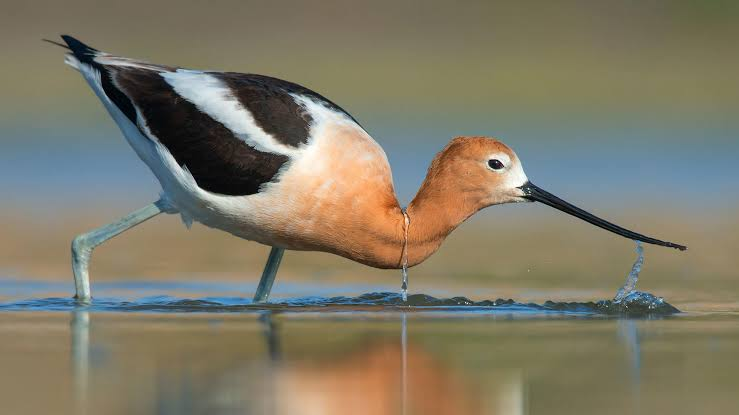

Avocet
Birds
The four species of avocets are a genus, Recurvirostra, of waders in the same avian family as the stilts. The genus name comes from Latin recurvus, "curved backwards" and rostrum, "bill". The common name is thought to derive from the Italian word avosetta.
Scientific name: Recurvirostra
Length: American avocet: 45 cm Encyclopedia of Life
Rank: Genus
Higher classification: Stilts and avocets
Family: Recurvirostridae
Mass: American avocet: 340 g, Pied avocet: 300 g
Avocet, any of several large shorebirds belonging to the genus Recurvirostra, family Recurvirostridae. Avocets have boldly contrasting plumage, long bluish legs, and a long black bill upturned at the tip.
They inhabit fresh and salt marshes that have areas of open shallow water and mud flats, and they feed by sweeping the bill, held partly open, back and forth in the shallows.
Often they wade together in line to corral minnows and crustaceans, and in deeper water they may upend like ducks. The nest, on the ground in open colonies, may be built up if flooding occurs.
Four species occur discontinuously in temperate and tropical regions worldwide. The Old World avocet (R. avosetta) has the crown and hindneck black, the wings black and white. It breeds in central Asia and in scattered localities in Europe.
Many winter in Africa’s Rift Valley. The slightly larger American avocet (R. americana), which is about 45 cm (18 inches) long (including the bill), differs chiefly in having the head and neck pinkish brown in breeding season, white in winter.
It nests in western North America and winters from California and Texas to Guatemala. The Andean avocet (R. andina), with a primarily white body, black back and wings, is confined to alkali lakes of the high Andes.
The red-necked, or Australian, avocet (R. novaehollandiae) is black and white with red-brown head and neck.
Biology of Avocet
Avocets have long legs and they sweep their long, thin, upcurved bills from side to side when feeding in the brackish or saline wetlands they prefer. The plumage is pied, sometimes also with some red.
Members of this genus have webbed feet and readily swim. Their diet consists of aquatic insects and other small creatures.
They nest on the ground in loose colonies. In estuarine settings they may feed on exposed bay muds or mudflats.
The pied avocet is the emblem of the Royal Society for the Protection of Birds.